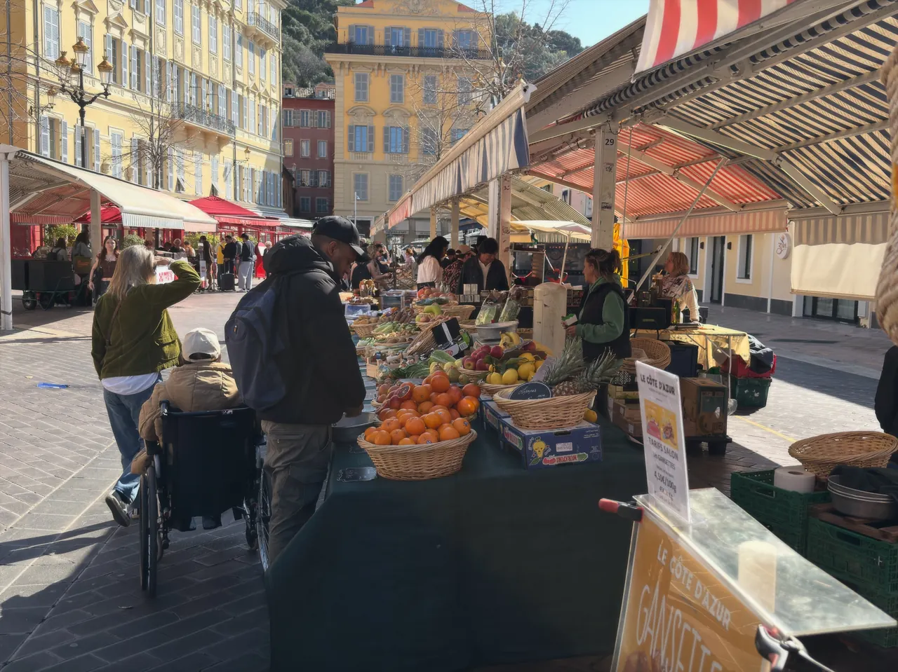

{kind=link}

Cannes
국제영화제의 상징 크루아제트 대로와 호화 요트 항구, 그리고 11세기 중세 어촌의 원형 르 쉬케 언덕이 공존하는 코트다쥐르의 영화 도시.

구시가지와 해변 도로 사이에 길게 뻗은 쿠르 살레야(Cours Saleya)는 니스에서 가장 활기찬 야외 시장 광장이다.
1897년 유럽 최초의 공식 꽃 도매시장으로 시작된 이곳은 오늘날 화사한 지중해 꽃다발과 함께 남프랑스 각지에서 올라온 라벤더, 절임 올리브, 프로방스 치즈, 납작복숭아, 무화과 등 신선한 농산물이 줄무늬 천막 아래 가득 진열된다.
특히 시장 한구석의 이동식 화덕에서 병아리콩 가루와 올리브유로 반죽해 무쇠 팬에 얇게 구워내는 니스 전통 간식 '소카(Socca)'는 니스 방문객이라면 반드시 맛보아야 할 미식 경험이다.
니스의 아침을 가장 감각적으로 시작할 수 있는 장소다. 화~일요일 오전 09:30~10:30에 방문하여 활기찬 시장을 구경하고, 화덕에서 갓 나온 뜨거운 소카에 굵은 흑후추를 듬뿍 뿌려 손으로 찢어 먹는 45~60분의 코스가 정석이다. (단, 월요일은 꽃/식품 시장 대신 골동품 벼룩시장이 열리므로 주의)
| 운영시간 | 화–일 식품·청과·수산 06:00–14:30 · 꽃시장 화–토 06:00–17:30(일·공휴일 14:30까지) · 월요일 골동품시장 |
|---|---|
| 휴무 | 연중무휴이나 월요일은 성격이 바뀐다 — 꽃·청과 시장은 화~일요일이고, 월요일에는 약 180개 상인의 골동품(브로캉트) 시장으로 전환된다 (07:00~18:00) |
| 예약 | 예약 불필요 — 개방형 노천시장 |
| 소요시간 | 45–60분 재확인 |
| 항목 | 상세 정보 |
|---|---|
| 위치 | Cours Saleya, 06300 Nice, France |
| 식품·청과·수산 시장 | 화–일 06:00–14:30 판매 종료 (월요일 제외 / 무료 입장) |
| 꽃시장 | 화–토 06:00–17:30 · 일요일·공휴일 14:30까지 |
| 골동품 시장 | 월요일 07:00–18:00 |
| 저녁 야시장 | 여름철(5월~9월) 화–일 18:00–24:00 (공예품 야시장 및 야외 레스토랑 테라스) |
| 접근 교통 | 트램 1호선 Opéra-Vieille Ville 정거장에서 도보 3분 |
⚠️ 요일 주의: 과일, 꽃, 소카 등 일반 식재료 시장을 보려면 화~일요일 아침에 방문해야 합니다. 월요일에는 식료품 가판대가 열리지 않습니다.
시장 남쪽을 가로막고 있는 길고 낮은 1층 건물들은 18세기 어부들의 창고로 지어진 퐁셰트(Les Ponchettes)다. 이 건물들의 평평한 지붕은 19세기 영국 귀족들이 바닷바람을 맞으며 산책하던 최초의 해변 테라스 산책로였으며, 오늘날에도 해변과 시장을 잇는 독특한 건축적 경계를 이룬다.
소카는 19세기 니스 부두 노동자들과 어부들이 고된 아침 노동 전 빠르고 저렴하게 단백질을 보충하기 위해 먹던 음식이다. 제노바의 전통 요리 파리나타(Farinata)에 뿌리를 두고 있으며, 겉은 바삭하고 속은 크림처럼 부드러운 식감이 특징이다.
국제영화제의 상징 크루아제트 대로와 호화 요트 항구, 그리고 11세기 중세 어촌의 원형 르 쉬케 언덕이 공존하는 코트다쥐르의 영화 도시.

해발 92m 바위 절벽 위에서 천사의 만(Baie des Anges)과 구시가지, 림피아 항구를 360도 파노라마로 굽어보는 니스 최고의 천연 전망 공원.

지중해로 60m 솟아오른 천연 바위 절벽 위에 조성된 모나코 대공국의 역사적 심장부이자 왕궁 마을.

크루아제트의 화려함 뒤에 숨겨진 11세기 옛 어촌의 가파른 돌계단 골목과 정상 성당에서 바라보는 칸 만의 파노라마.

칸 주민들의 부엌이자 지중해 해산물, 프로방스 과일, 꽃, 치즈가 가득한 1934년 유서 깊은 철골 재래시장.

관광객 중심의 쿠르 살레야와 달리 니스 현지 주민들의 진짜 장바구니 물가와 일상을 만나는 대형 야외 농산물 시장.